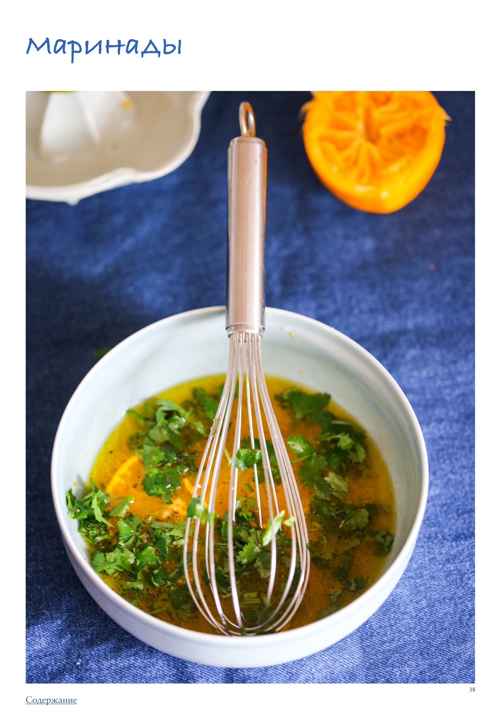

Лето — сезон шашлыков, гриля, готовки на углях и на свежем воздухе. Чтобы поджаренное над углями блюдо заиграло всеми яркими красками вкуса, его нужно правильно подготовить: приправить, замариновать.
Как правильно мариновать
Главное, о чем нужно помнить: размягчение мяса под воздействием кислоты — распространенный кулинарный миф. Ни сок лимона, ни вино, ни уксус, а также киви, ананасы и прочие «волшебные» продукты не смогут превратить изначально неправильно выбранное жесткое мясо в мягкое.
Хестон Блюменталь проводил опыты, чтобы развенчать этот миф. Выяснилось, что даже за несколько часов (мясо выдерживали в кислом маринаде до суток) кислота проникает внутрь всего на несколько миллиметров. То есть процедура маринования с помощью кислоты практически бесполезна, а в избытке — даже вредна, так как кислота разъедает поверхность мяса, делая ее рыхлой и невкусной.
Мясо маринуют не для размягчения, а для того, чтобы придать ему дополнительный вкус и аромат — прежде всего за счет соли и специй. Кислота может добавить нотку пикантности, но выдерживать в кислом маринаде не более 30 минут — 1 часа. Если хотите замариновать продукт на ночь — уберите кислоту, добавьте ее только перед готовкой.
Соль — наше все
Соль — главный элемент любого маринада. В отличие от кислоты, соль способна проникать глубоко внутрь белковых продуктов, улучшая их вкус изнутри. На основе соли делают «соленады» — маринады из соленой воды с добавлением специй.
Виды маринадов
Сухие смеси (обсыпки, натирки) — без жидких ингредиентов. Белковый продукт обваливают в смеси, к влажной поверхности прилипает ровно нужное количество специй. Перед жаркой продукт дополнительно смазывают маслом.
Влажные маринады — густые, обволакивающие или жидкие. Можно погрузить продукт целиком (удобно в пакет с зиплоком). Основой могут служить соевый соус, греческий йогурт и другие жидкости. Если мариновали сырое мясо — такой маринад нельзя использовать для подачи в качестве соуса.
Глазури — густые соусы, которыми смазывают продукт незадолго до готовности (например, соус барбекю или терияки).
Идеи маринадов
Греческий для свинины: сок лимона, оливковое масло, орегано, свежий или сухой чеснок, паприка, соль, черный перец.
Гранатовый для свинины: тонко нашинкованный лук, соус наршараб, черный перец.
Китайский для курицы или свинины: устричный соус, растительное масло, соевый соус, сахар или мед, смесь «5 специй».
Кавказский для баранины или курицы: много тонко нашинкованного лука, айран или кефир, соль, черный перец, семена кориандра по желанию.
Йогуртовый для курицы или индейки: натуральный йогурт, тертый чеснок, тертый имбирь, рубленая кинза, сок и цедра лимона, молотый кумин, молотый кориандр, порошок карри, хлопья перца чили, оливковое масло.
Острый для баранины: лук, чеснок, зира, кориандр, оливковое масло, соль, черный перец.
Японский для лосося: соус терияки, соевый соус, чесночный порошок, оливковое масло, острый соус чили (по желанию).
Средиземноморский для кальмара: оливковое масло, сок и цедра лимона, тертый чеснок, сладкая паприка, черный перец.
Сухой техасский для говядины (стейка): поровну чесночного и лукового порошка, куркумы, копченой паприки, молотого острого красного перца, соль, черный перец и сахар по вкусу.
Сухой острый для курицы или крылышек: поровну копченой паприки, сладкой паприки, хлопьев чили, молотого кориандра и чесночного порошка. Натереть, мариновать до 2 часов, перед жаркой смазать оливковым маслом.
Азиатская соево-медовая глазурь для рёбрышек или крылышек: масло виноградных косточек, жидкий мед, тертый свежий имбирь, тертый чеснок, сладкая горчица, немного рисового уксуса, соевый соус (замариновать продукт, а затем смазывать в процессе готовки).
Бальзамическая глазурь для стейков из капусты или половинок баклажанов: бальзамический уксус (или соус наршараб), оливковое масло, жидкий мед, тимьян, крупная соль, черный или белый перец.